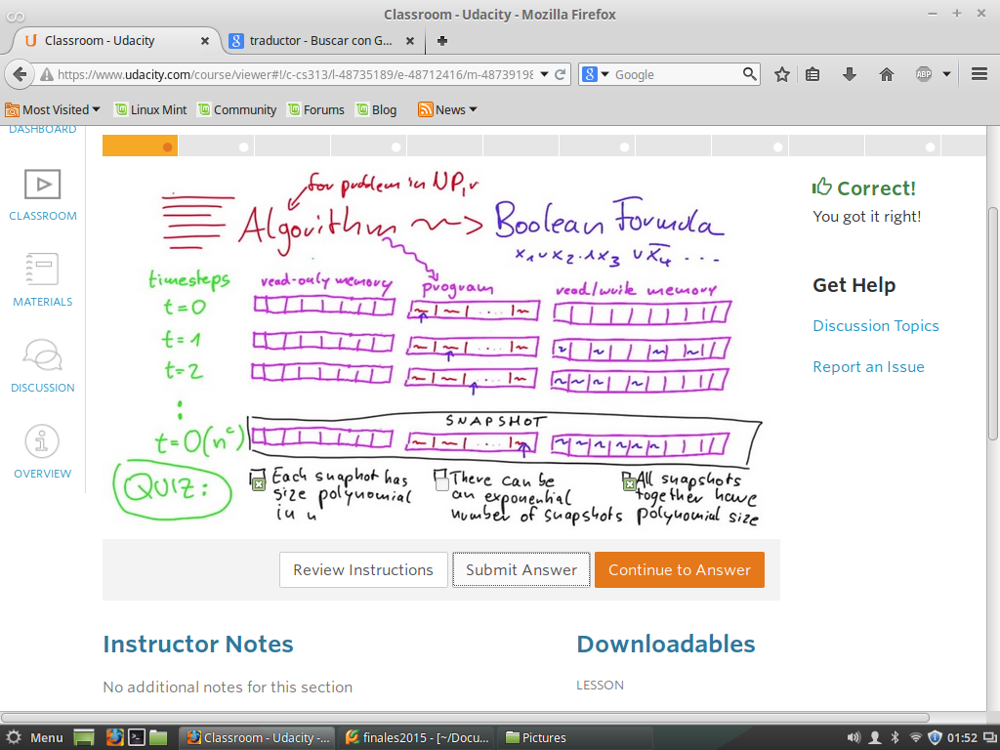
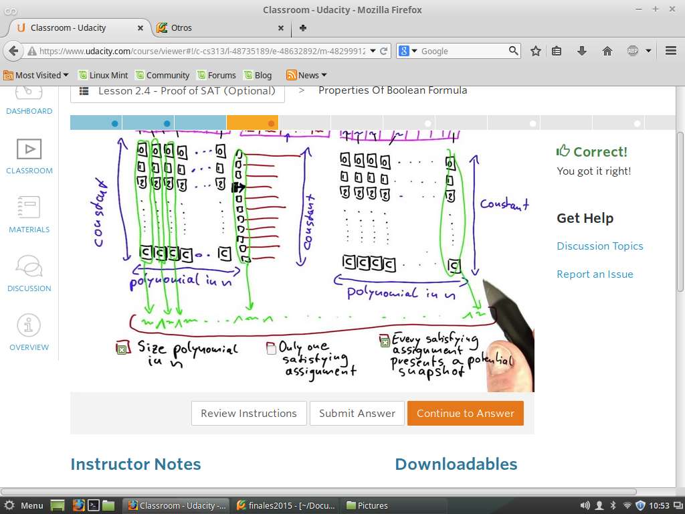
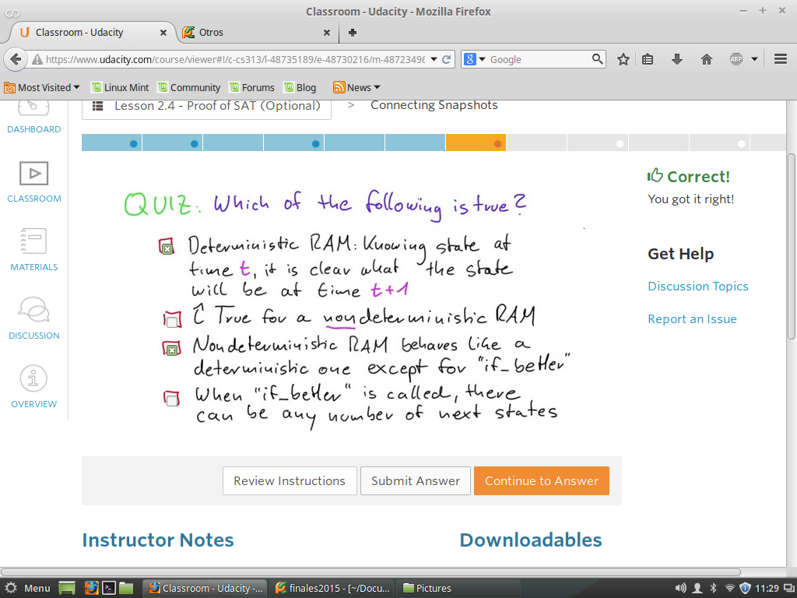
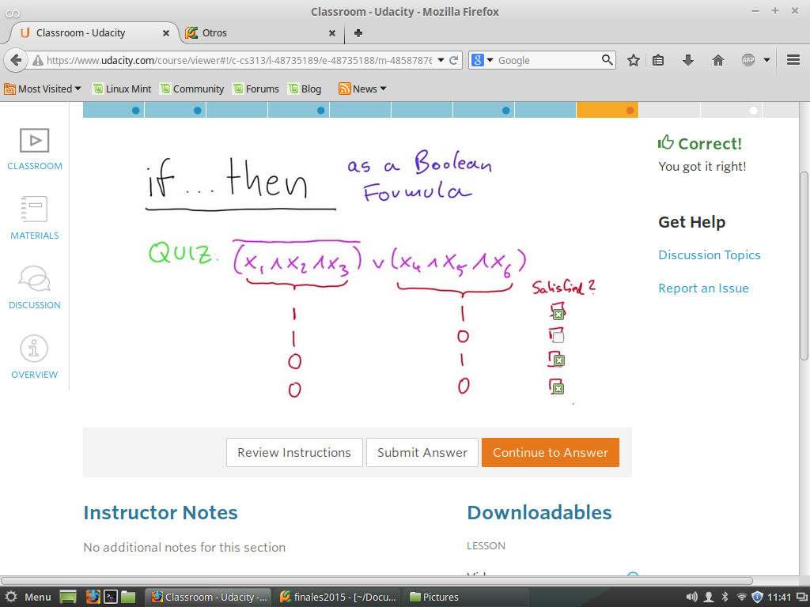
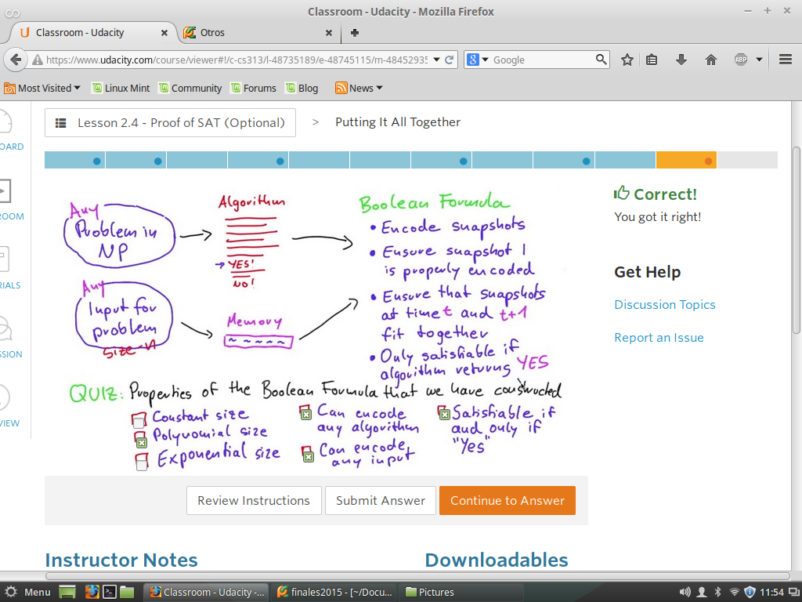

Comprobar SAT
Algunos Problemas de NP-Completos pueder ser Reducidos en tiempo Polinomial a SAT
Por medio de Tres Ideas.
Primero: Algunos problemas NP pueden ser resueltos en Tiempo polinomial
por una RAM NO-Determinista
Segunda:Debe haber un algoritmo de tiempo polinomial usando -> If_Better
Tercera IDEA: Ver que algunos algoritmos pueden ser codificados como na formula Booleana.
Quiz 1 -Algoritmos a Formula Booleana
Examinar la relaciion que hay en cada uno de los siguientes Algoritmos
para problemas de NP, para ser Reducidas a Formulas Booleanas.

Quiz 3 -
Dada una formula Boooleanas, con operadores Logicos.Bebemos determinar los
valores a las variables para obtner Verdadero de toda la expresion.

Quiz 4 -Numero de comunicaciones
Dada una formula Boooleanas, con operadores Logicos.Bebemos determinar los
valores a las variables para obtner Verdadero de toda la expresion.

Quiz 5 - MINIMO numero de Monitores
Dada una formula Boooleanas, con operadores Logicos.Bebemos determinar los
valores a las variables para obtner Verdadero de toda la expresion.

Quiz 6 -
Dada una formula Boooleanas, con operadores Logicos.Bebemos determinar los
valores a las variables para obtner Verdadero de toda la expresion.
